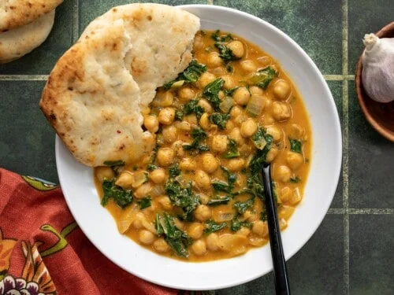

COCONUT CURRY CHICKPEAS

Description
Coconut Curry Chickpeas are a flavorful and filling easy weeknight dinner packed with chickpeas, kale, and a flavorful creamy curry sauce!
Ingredients
- Aromatics
- Spices
- Tomato sauce
- Coconut milk
- Chickpeas
- Kale
Steps
- Dice the onion, mince the garlic, and grate the ginger. Add the onion, garlic, and ginger to a large deep skillet along with the olive oil. Sauté the aromatics over medium-low heat for about five minutes, or until the onions are soft and translucent.
- Add the curry powder and cumin to the skillet and continue to stir and cook for about one minute more to toast the spices.
- Drain the chickpeas, then add them to the skillet along with the tomato sauce and coconut milk. Stir everything to combine.
- Turn the heat up to medium-high to bring the sauce up to a simmer. Once simmering, turn the heat back down to medium-low and allow the curry to continue to simmer for 15 minutes, stirring occasionally.
- Add the kale and stir it into the sauce. Continue to cook and stir until the kale has wilted to your desired tenderness (I cook for about 5 minutes more). Finally, taste the curry and add salt to taste (about ½ tsp).